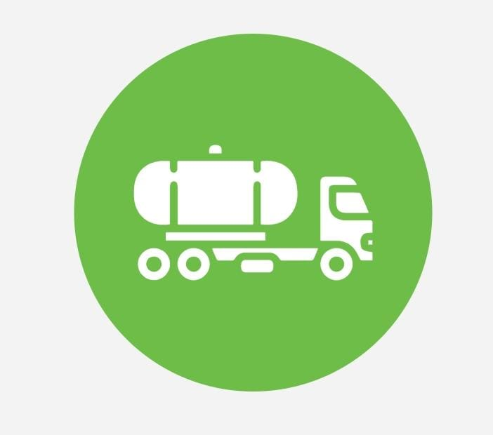

The service partners will use vacuum pumps and the vehicle-mounted tank to clear the septic tank. The vacuum pumps will suck the sludge and fill the vehicle-mounted tank. This sludge will be later taken away for prompt and proper disposal. Our service partners will clean the septic tank internally. The walls of the septic tank will be scraped and cleaned to make it sludge-free. The residue would be pumped out and treated with cleaning agents.
We offer blockage removing services for sewer and drain blockages. Our service partners are well equipped to remove any sort of blockage that is troubling you. This may be in any type/size of pipe.
Our service partners have the best equipment and amazing experience to carry out the pest control service. We offer eco-friendly options as pest control solutions. You may choose the type of solution whi
Since the outbreak of the Pandemic, sanitization has become an important need. This service helps to maintain a healthy environment in a literal sense. It not only helps to keep the COVID 19 virus away but also other harmful viruses and bacteria. Disinfecting the workplace also sends a message to your employees that “You Care” about them.
Since the outbreak of the Pandemic, sanitization has become an important need. This service helps to maintain a healthy environment in a literal sense. It not only helps to keep the COVID 19 virus away but also other harmful viruses and bacteria. Disinfecting the workplace also sends a message to your employees that “You Care” about them.